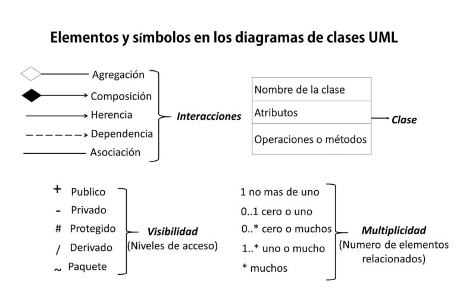

Los diagramas de clases en UML son una herramienta de modelado utilizada en el desarrollo de software para representar la estructura estática de un sistema. Permiten visualizar las clases del sistema, sus atributos, métodos y las relaciones entre ellas.
Partes de un Diagrama de Clases:
1. Clase: Representa una entidad en el sistema y se representa con un rectángulo dividido en tres secciones: nombre de la clase, atributos y métodos.
Tanto los atributos como las funciones incluyen al principio de su descripción la visibilidad que tendrá. Esta visibilidad se identifica escribiendo un símbolo y podrá ser:
(+) Pública: Representa que se puede acceder al atributo o función desde cualquier lugar de la aplicación.
(-) Privada: Representa que se puede acceder al atributo o función únicamente desde la misma clase.
(#) Protegida: Representa que el atributo o función puede ser accedida únicamente desde la misma clase o desde las clases que hereden de ella (clases derivadas).
2. Atributos: Son las propiedades o características de una clase. Se representan dentro de la sección de atributos, indicando el nombre del atributo y su tipo de dato.
3. Métodos: Son las operaciones que una clase puede realizar. Se representan dentro de la sección de métodos, indicando el nombre del método, sus parámetros (si los tiene) y su tipo de retorno.
4. Relaciones:
4.1 Asociación: Representa una conexión entre dos clases, indicando que los objetos de una clase están relacionados con los objetos de la otra clase.
4.2 Agregación: Indica una relación parte-todo entre una clase "todo" y una clase "parte".
4.3 Composición: Es similar a la agregación, pero con una relación más fuerte, donde la parte no puede existir independientemente del todo.
4.4 Herencia (Generalización): Representa una relación de especialización entre clases, donde una subclase hereda los atributos y métodos de una superclase.
4.5 Dependencia: Indica que una clase depende de otra en algún aspecto, por ejemplo, mediante la utilización de sus métodos o atributos.
5. Interfaces: Especifican un conjunto de métodos que una clase debe implementar.

Ejemplos de Aplicación:
Sistemas de Gestión de Bibliotecas
Los diagramas de clases se utilizan para modelar las entidades del sistema, como libros, usuarios, préstamos, etc., y las relaciones entre ellas, como la asociación entre un usuario y los libros que ha prestado.
Sistemas de Ventas en Línea
Se utilizan para modelar las entidades del sistema, como productos, clientes, pedidos, entre otros, y las relaciones entre ellas, como la asociación entre un cliente y los productos que ha comprado.
Desarrollo de Videojuegos
Los diagramas de clases se utilizan para modelar los elementos del juego, como personajes, enemigos, objetos, etc., y las relaciones entre ellos, como la herencia entre diferentes tipos de enemigos.